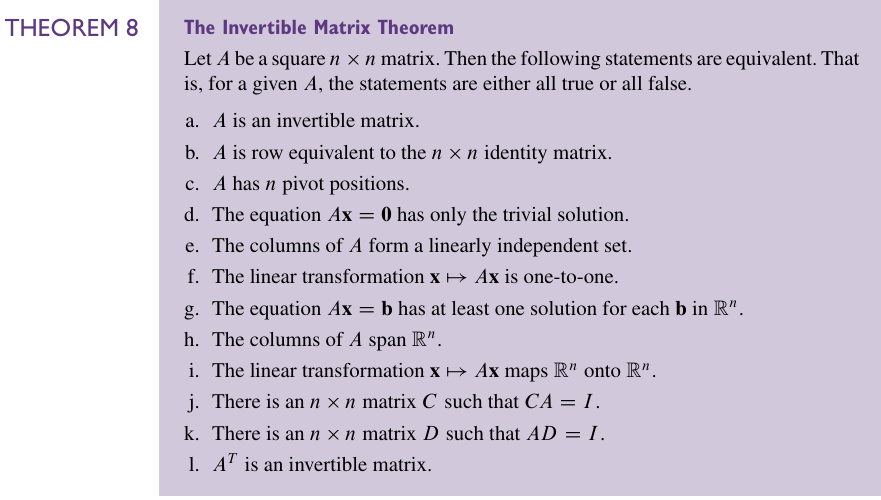
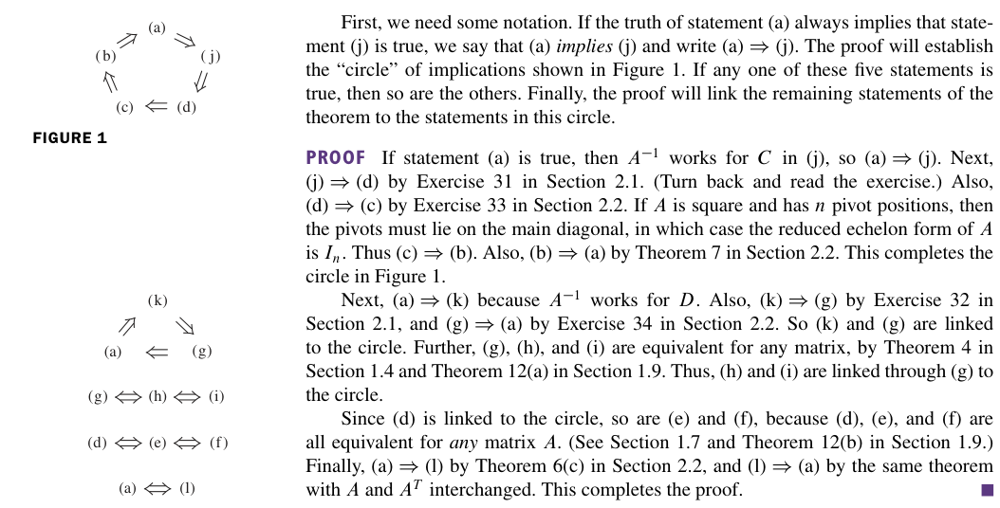
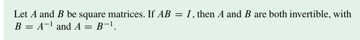
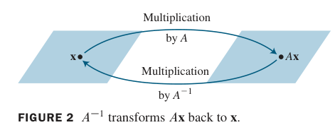
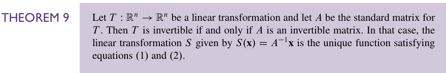

2.3 Characterization of Invertible Matrices#
本节回顾第 1 章引入的大部分概念，把它们与 \(n\) 个未知数的 \(n\) 个线性方程组、以及方阵联系起来。主要结果是下面这个定理（ 可逆矩阵定理 ）：

对于一个 \(n\times n\) 的方阵，下面这些命题是等价的。也就是说，它们 要么全对，要么全错。
1、A 可逆
2、A 和 \(n\times n\) 的单位矩阵行等价。
3、A 有 n 个 pivot position
4、方程\(A\mathbf{x}=\mathbf{0}\)只有平凡解
5、\(A\)的各列线性无关
6、A 对应一个单射
7、\(A\mathbf{x}=\mathbf{b}\)对于任意一个\(\mathbf{b}\)有解
8、A 的各列张开\(ℝ^n\)
9、A 对应一个满射
10、A 存在左逆
11、A 存在右逆
12、A 的转置可逆
证明如下：

其实更值得看的是两个图，证明的文字反而是没有那么重要的。同时这里用到了不少的定理和练习题。我们也罗列一下。
比如：
线代习题选#2.1 T30~T34
线代习题选#2.2 T33-34
2.2里的Theorem 07
Chapter 01 Summary#Theorem 4
Chapter 01 Summary#Theorem 12
2.2的Theorem 06
1.7 Linear Independence 的相关知识。
基于我们在 Theorem 05 学到的知识，这个（7）还可以被写成是 \(A\mathbf{x}=\mathbf{b}\) 对每一个 \(\mathbf{b}\) 都有唯一解。主要原因是 \(A\mathbf{x}=\mathbf{0}\) 只有平凡解。
下面是一个简单的事实：

这个可逆矩阵定理把 \(n \times n\) 的矩阵分为了两类：一类是可逆的（非奇异的），另一类是不可逆的（奇异的）。每一个定理里的命题事实上给出了可逆矩阵的一个性质。它们的反命题也就给出了不可逆矩阵的性质。比如说，一个 \(n \times n\) 的奇异矩阵就 不 行等价于一个单位矩阵，也没有 n 个 pivot position，有着线性相关的列。我们在练习中会看到这一点的。
这个定理是很有用的，因为它链接起了很多的概念，比如说线性无关，存在性和唯一性问题。当然，我们也要强调：这个可逆矩阵定理 只适用于方阵，我们不能把它运用在一般的矩阵上。但是这也很强了。
可逆线性变换#
回忆 2.1 Matrix Operations 中矩阵乘法和线性变换之间的联系。当矩阵 A 可逆的时候，我们就可以把这个方程
看成是一个线性变换的命题，比如这个图

一个线性变换 \(T:ℝ^n \to ℝ^n\) 是可逆的，如果存在这样一个变换 \(S:ℝ^n \to ℝ^n\)，使得：
注意这里其实没有要求 S 是线性的，但是我们马上就能看到：如果 S 存在，那么它唯一，且它是一个线性变换。我们称 S 是 T 的逆，记作 \(T^{-1}\)。

证明如下：如果 T 可逆，那么 T 是一个满射（对于任意的 \(\mathbf{x}\) 都有解 \(S(\mathbf{x})\)），这意味着 A 可逆；
如果 A 可逆，那么让 \(S(\mathbf{x})=A^{-1}(\mathbf{x})\)，那么 S 就是一个线性变换，然后 \(S\) 显然满足这两个方程。于是 \(T\) 可逆。
对 \(S\) 唯一性的证明可以看 exercise 47